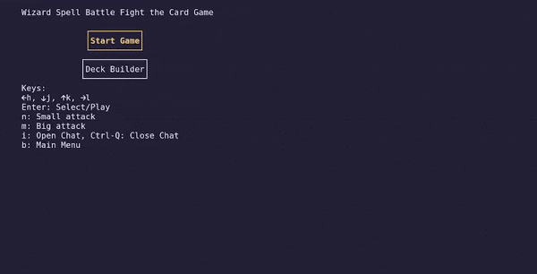

As a kid, one of my favorite things to do was make card games. I would cut out 2.5 by 3.5 inch boxes of stiff drawing paper and round the edges. I designed Pokemon inspired monsters, came up with rules and lore, and hand drew every single card. For bring-a-board-game day, I brought my cards to school and had so much fun playing with my classmates. That was my thing for a while, and though I eventually stopped, I've always wanted to code my own multiplayer card game.
As you might expect, this isn't my first rodeo when it comes to attempting this. I don't how many card game programs I've started but haven't finished because I hit a roadblock and gave up. One was a hacky website using Firebase's RTDB for the backend which blew my mind once I got it to work because I'd never really understood how multiplayer connections worked. I also didn't know Git at the time, so I didn't have a backup of my code and sadly lost it when my computer stopped turning on. This time around, I know a bit more about version control, server-client architecture, etc, so I decided to give it one more shot and hopefully complete something substanstial from start to finish.
What the TUI game looks like so far as of Sep 2024
The main features I'm planning for this project are the game logic, terminal user interface, deck-building, ability to create/join servers, and play against bots. At the time of writing this, I've finished 90% of the TUI and am excited to work on the networking part. It'll be uncharted territory for me, but I think it'll be cool to dip my toes in concurrency and TCP sockets.